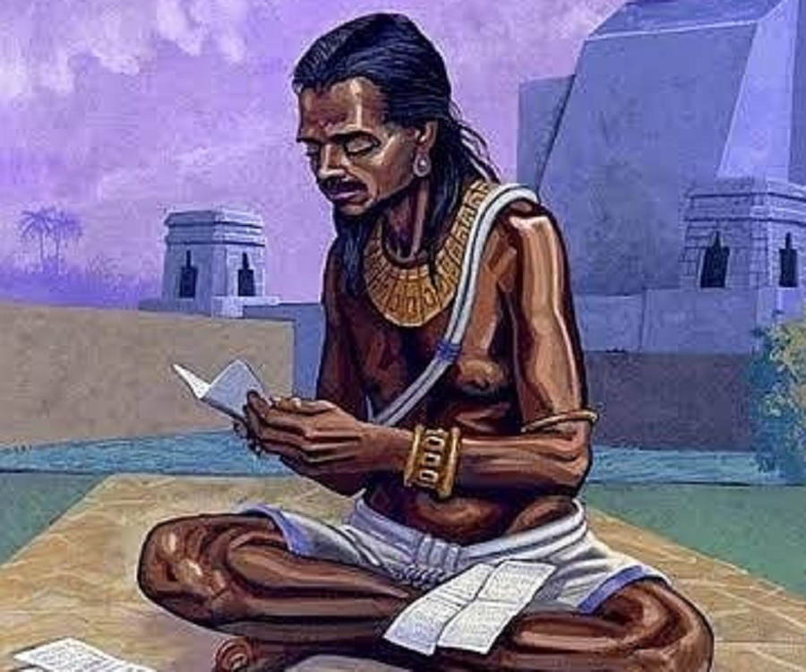

Brahmagupta was a great mathematician and astronomer. His Father's name was
Jisnugupta. Brahmagupta was born in 598 CE in Bhinmal, a city in Rajasthan. He spent a
major part of his life in Rajasthan. He wrote many books based on mathematics and astronomy,
some of them are:
Durkeamynarda, Khandakhadyaka, Brahmasphutasiddhanta and Cadamakela.
His contributions to mathematics are:
1.Properties of Zero & Rules for Arithmetic with Negative/Positive Numbers:-
According to Brahmagupta, zero is a number that is obtained, when a number is subtracted from
itself. He has given some properties on this topic they are:
1.When zero is added to a number or subtracted from a number, the number remains unchanged;
and a number multiplied by zero becomes zero.
2.A debt minus zero is a debt, and a fortune minus zero is a fortune.
3.Zero minus zero is a zero.
4.The product of zero multiplied by a debt or fortune is zero.
5.The product of zero multiplied by zero is zero.
6.The product or quotient of two fortunes is one fortune.
7.The product or quotient of two debts is one fortune.
8.The product or quotient of a debt and a fortune is a debt.
9.The product or quotient of a fortune and a debt is a debt.
(Fortune are the positive numbers and debt are the negative numbers)
2. Advanced Concepts in Geometry
Worked extensively on formulas for area and volumes of geometric shapes and technics for
constructing geometric figures.
3.Rules for fractions
Provided methods for operations with fractions such as addition, subtraction, multiplication, and
division.
4. Astronomy and Trigonometry
-- Calculated acurate sine values.
-- Developed interpolation methods for calculating intermediate values.
-- Refined methods for astronomical observations.
5.Legacy
-- His work influenced subsequent mathematicians in India and the Islamic world.
-- His treatment of zero and negative numbers laid the foundation for modern arthimetic and
algebra.
Brahmagupta contributed much more in the field of mathematics. Here, I have explained a
few of them.
